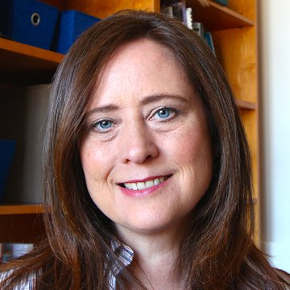
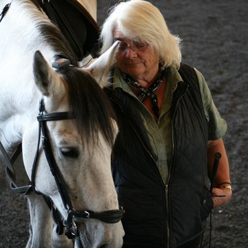

Equine biomechanics, from AMEC to Rancho del Nido
Our horse research began at the University of Arizona's Al-Marah Equine Center (AMEC) in Tucson. In 2026 the horses and the program moved to Rancho del Nido in Sonoita, Arizona, home of EquiPhysics. Here is what we study, where the work happens now, and how to join in.
What we study
Horses are remarkable athletes, and they are partners and teachers in all of this work. We measure how they move, breathe, and pump blood, and we build mathematical models that explain what we see.

Movement and soundness
Wearable inertial sensors record stride timing and symmetry. We look for asymmetries that can point to injury or training imbalances, including in off-the-track Thoroughbreds.

Effort and recovery
Heart rate and heart-rate variability during exercise and rest, how breathing couples to the stride, and how horses respond to music.

The athletic aorta
Computational fluid dynamics of the horse's aorta, and the point where blood flow turns from smooth to turbulent.

Free apps and lessons
The Horse Gait Lab and Horse Heart Lab turn our horses' data into classroom mathematics, from high school through college.
Tools and lessons
The Al-Marah Equine Center
In 2023 we started the Systems Biomechanics of the Horse program at the University of Arizona, at the Al-Marah Equine Center (AMEC) in Tucson. Students from mathematics, engineering, animal science, veterinary science, and data science came together around horses. They collected and analyzed data, built new tools, and learned about animal care and welfare.
- Undergraduate research teams in the Horse Science & Innovation Lab, a Vertically Integrated Project.
- A summer REU pairing data-driven mathematics with equine science.
- Course-based research and the Systems Biomechanics of the Horse symposia.
AMEC gave EquiPhysics a place to begin. I am grateful to the students, staff, volunteers, and horse people who built this work with us, and especially to the horses.
Rancho del Nido, Sonoita
In 2025 EquiPhysics became an independent nonprofit so the work could outlast any one university. When the university announced the sale of Al-Marah in 2026, the horses and the program moved to Rancho del Nido in Sonoita, an inspected partner facility. EquiPhysics received federal 501(c)(3) recognition the same year.
University of Arizona Applied Mathematics PhD student Ashley Sodt continues her horse research with us, and the barn is open to volunteers, clinics, and demos.
- December 18–20, 2026: Dominique Barbier clinic with EquiPhysics demos at Rancho del Nido. Ride or audit! Details
- Summer 2028: "Synchrony in Human–Animal Partnerships: Mathematical Frameworks for Movement, Physiology, and Cognition," a workshop funded by the NSF–Simons National Institute for Theory and Mathematics in Biology, in Chicago.
Questions, visits, or collaborations: laura_miller@equiphysics.org
The horse team

Laura Miller
I have worked with horses since I was eight, mostly in classical dressage, horse care, and running barns.

Bernadette Genua
Bernadette runs the horse side of our research and is the horse trainer and barn manager for EquiPhysics.
Ashley Sodt
Blood flow in the equine aorta, and mentoring undergraduate horse projects.
Isabelle Tillman
Heart rate and heart-rate variability across gaits, effort, and recovery.
The rest of the lab, including our jellyfish and insect-flight researchers, is on the people page.